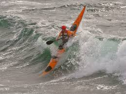
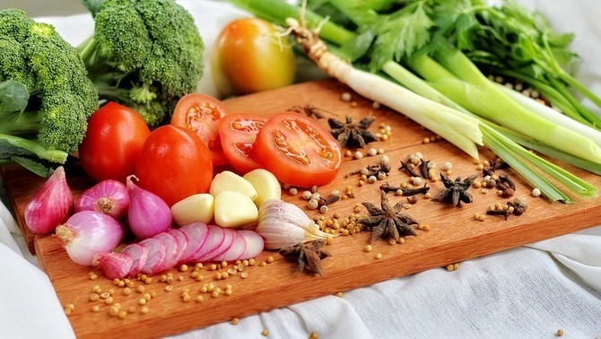

Interested on
Outoor activities

During most part of my life I've been used to 'go out' to do something.
From hiking in the hills to seakayak paddling in the ocean, including rock climbing
in my surroundings, ice climbing abroad or mushroom picking anything is a good excuse
to 'go out'.
Family, Pets, Home & Garden

Another of my passions is to stay at home peacefully ( probably after being out) with
my beloved ones either doing nothing or gardening for a while, either helping
boys with their homework, or just staying together silently. I love growing my own
vegetables or repairing broken things and preparing the garden to enjoy it in summertime.
Cooking

Cooking probably could be fitted on the previous chapter, but in fact that
activity has it' s own entity since many times I do it just for practice o f
or taste myself, it' s because of that I decided to place my interest on
cooking inside it's own 'article'.